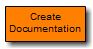

This system block is used to generate a documentation of the current project. The document will be created in X2CCode\..\Documentation and will be called ProjectDocumentation_<Name of model>.pdf.
Test reports: If the checkbox Add test reports is selected, test reports of the C-Unit tests of the used X2C blocks are added to the project documentation.
User documentation: The user has the possibility to add user specific documentation to the project documentation. When creating the project documentation, the X2CCode directory is scanned for a UserDoc.tex file. If this file is present, it will be included in the documentation.
In order to generate a documentation in PDF-format a TeX-compiler (e.g. MiKTeX) has to be installed.